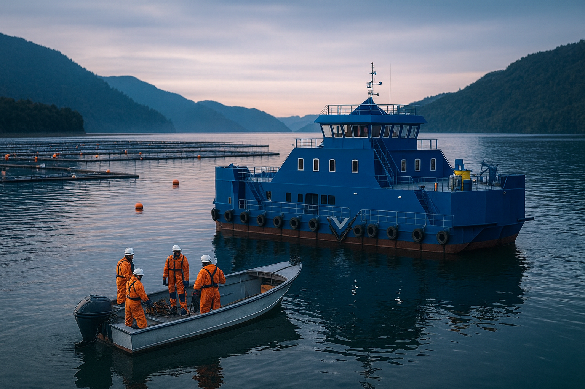

Mantención marina
Diagnóstico y reparación de sistemas eléctricos, hidráulicos, bombas, generadores, soldadura en superfice o submarina y mantención de estructuras en pontones y naves.
Mantención de pontones y naves, teams de personal, buceo industrial y respuesta rápida en toda la X Región para centros y embarcaciones.
Apoyamos la operación diaria de centros y embarcaciones con un enfoque práctico y respuesta rápida en toda la Región de Los Lagos.
Diagnóstico y reparación de sistemas eléctricos, hidráulicos, bombas, generadores, soldadura en superfice o submarina y mantención de estructuras en pontones y naves.
Equipos de trabajo para apoyo en faenas de montaje, ordenamiento, mantención y operación en superficie.
Inspecciones subacuáticas, búsqueda de elementos, limpieza de cascos, medición de espesores, inspecciones de fondeo y apoyo a trabajos técnicos en naves y estructuras.
Atención inmediata en superficie para centros y en superficie y buceo para naves en situaciones críticas.
MARVEX es la división marítima de Géminis SpA, con base en Castro y presencia en toda la Región de Los Lagos. Nuestro foco es entregar soluciones concretas para mantener operativos pontones y embarcaciones, con equipos técnicos especializados y capacidad de respuesta rápida.
Combinamos experiencia en mantención marina, operación en superficie, teams de trabajo, faenas de buceo, para que la producción no se detenga por problemas mecánicos, eléctricos o estructurales ya sea en superficie o bajo el agua.
Operamos desde Castro hacia toda la X Región: canales de Chiloé, zona continental y principales áreas productivas.
Esta ubicación nos permite llegar rápidamente a distintos puntos de la región, ajustando cuadrillas y recursos según cada faena.
Algunas referencias de trabajos realizados en la zona. Estos comentarios son de ejemplo y se irán actualizando con experiencias reales de nuestros clientes.
“Rápida respuesta en una falla eléctrica en pontón. Llegaron rápido, trabajaron ordenado y dejamos el centro operativo, recomendable¡¡¡.”
“Coordinamos personal para una faena de buceo de urgencia, llegaron a tiempo con equipos de primer nivel"
“Limpieza de fondo del barco e instalación de anodos, todo impecable.”
Si ya trabajaste con nosotros, puedes compartir tu experiencia para ayudarnos a mejorar y para que otros conozcan nuestro servicio.
Si necesitas apoyo para una mantención en pontón, barco, barcaza u otras naves, una faena puntual o una emergencia, contáctanos directamente y coordinamos en terreno.
Respuesta operativa para centros y embarcaciones en la Región de Los Lagos.